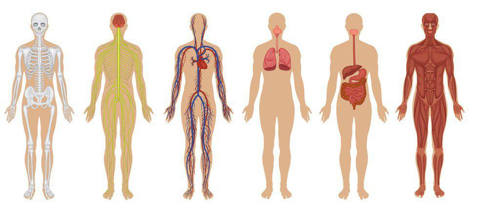

Анатомія людини

Анатомія людини (з грецької. ανά, aná — верх і τομή, tomé — різати) — розділ анатомії, що вивчає органи та системи органів людського тіла.
Анатомія людини вивчає зовнішні форми і співвідношення тіла людини і його частин, окремі органи, їхню мікроскопічну та макроскопічну будову.
Нормальна, або систематична анатомія людини вивчає будову «нормальної», тобто здорової людини, причому систематично, тобто з розбиттям на системи органів, а потім на органи, відділи органів та тканини.
MASSAGE ON THE BEACH
Масаж (фр. massage, від masser — «розтирати») — сукупність прийомів механічної і рефлекторної дії на тканини і органи, у вигляді розтирання,
тиску, вібрації або погладжування, що проводяться безпосередньо на поверхні тіла людини, як руками, так і спеціальними апаратами, через повітряне, водне чи інше середовище, з метою досягнення лікувального ефекту.
Масаж є активним лікувальним методом, суть якого полягає в нанесенні дозованих механічних подразнень на тіло пацієнта різними, методично виконуваними спеціальними прийомами,
що можуть виконуватися рукою масажиста або за допомогою спеціальних апаратів.